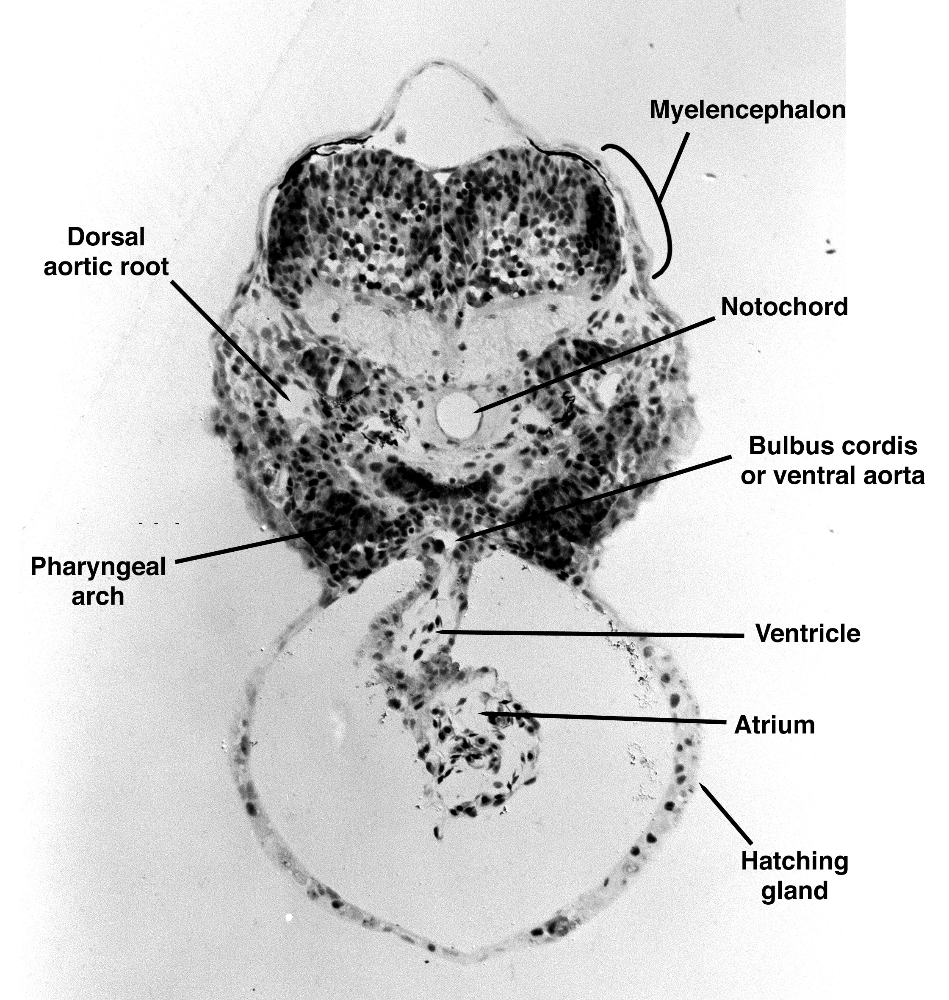
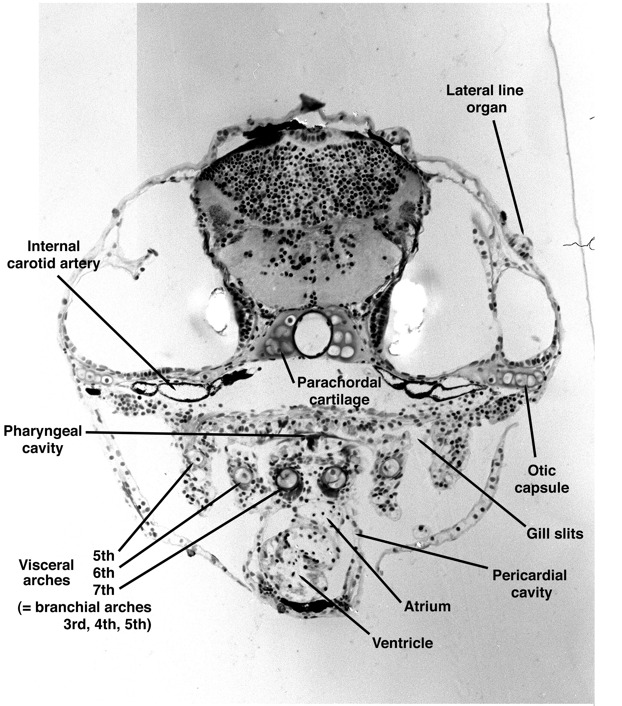

Zebrafish Heart Anatomy
The images below show cross sections of zebrafish at different stages of development. The atrium and ventricle can be seen in both images, with the ventricle found at the front, and the atrium behind it . The ventricle is the cavity in the heart that expands and compresses to push blood aroud the body, thus we expect to see pulsing mostly at the front of the heart.
48 hour zebrafish

Cross-section of a zebrafish showing the atrium and ventricle at 48 hours.
5 day zebrafish

Cross-section of a zebrafish showing the heart at 5 days.
3D Zebrafish Model
These images show plan and side views of a 3D zebrafish model. They help show the position of different structures within the fish.
Side view

Side view of the 3D zebrafish model.
Plan view

Plan view of the 3D zebrafish model.
Finding the Heart in Our Data
At the very front of the heart lies the Bulbus Aortis. This lies underneath the parts of the brain called the Tectum, valvula cerebelli and fifth branchial arch, as can be seen